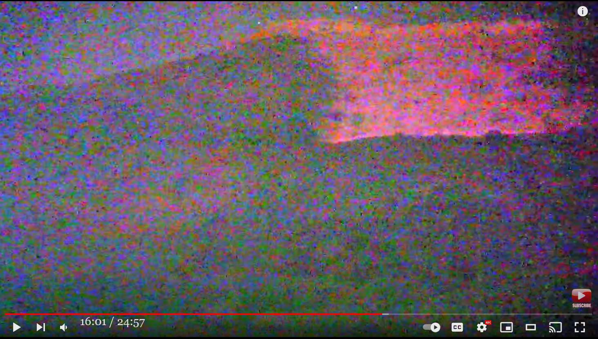

【訂正】Magic Mesa: 暗視カメラで台地を観測 → 台地が広範囲に謎の発光

前置き
以下は Skinwalker ranch の事例ではないが、地理的にも地質学的にもよく似た Magic Mesa での異常現象なので Skinwalker ranch に関連した話題として取り上げる。
なお、Skinwaler ranch でも同様の発光現象が撮影されている（下）。 </a>
訂正
(2022-11-13 訂正) 撮影した場所は Skinwalker の台地ではなく、似た地形の Magic Mesa と呼ばれる場所の台地だった。訂正しお詫びする。Magic Mesa の具体的な場所は後日、確認するがとりあえず訂正を優先。前置き
- Frandon Fugal らの調査チームとは無関係の第三者が、Skinwalker ranchMagic Mesa の台地を敷地の柵の外側から暗視カメラで撮影した動画。 - 周囲 360度を見渡しても、どこにも台地を照らす光源が写っていないにも関わらず、台地が広範囲に間欠的に赤外領域で発光している様子が何度も動画に捉えられている。切り出し静止画
- 短く太い赤線はレーザー・ポインタによるもの。 
- 一瞬だけ照らされているシーン。 - 短く太い赤線はレーザー・ポインタによるもの。音声書写（自動生成）
▼展開
we have 2:44 can you say do you know the name and 2:46 type of your night vision 2:48 of my night vision yeah uh it's their 2:51 gen 3 plus pvs 14s um i can't remember 2:55 there's a couple different manufacturers 2:57 that make them 2:58 um i'd have to take a double look but 3:00 they're they're mil-spec gen 3 pvs 14s 3:03 um anyone who knows about night vision 3:05 is going to know what that is yeah you 3:06 can reference that and look it up to see 3:08 what it's capable of seeing and how far 3:10 into the spectrum and what spectrum 3:13 that it catches and we're going to try 3:14 to film with a cell phone through that 3:16 lens but mostly we're going to try to 3:19 walk around with that night vision 3:22 and debunk because 3:24 you're saying if there is a light source 3:26 there's point of origin 3:28 like a porch light or a 3:30 game light or a headlight that it's 3:32 going to definitely give it up and we're 3:34 going to debunk that tonight it'll be 3:35 super obvious with those pvs 14s even 3:38 like the window light from a house from 3:41 900 yards away you're gonna be able to 3:43 tell exactly what that source is coming 3:45 from perfect that's what we're trying to 3:46 do is answer all those questions 3:55 i'm too bad for just sticking sticking a 3:57 phone up to the night vision look at the 4:00 stars 4:05 that black thing is just an artifact in 4:07 the lens 4:18 oh yeah 4:21 this will be a really interesting 4:22 perspective though to get this night 4:24 vision with the cell phone 4:26 and film it like this as well 4:31 bust out the duct tape 4:34 just duct tape it to the bathroom it's 4:35 like a weird angle yeah 4:38 i see it yep there it is 4:40 i'm filming oh very bright 10 18 p.m 4:44 all right get it through this it's a 4:45 square 4:46 very bright square right your phone 4:49 here i'm gonna film it on my phone see 4:51 it growing 4:54 [Music] 4:57 okay i'm filming with the night vision 4:59 with the psionics 5:02 well okay 5:03 i can still see filming here let's trade 5:06 now 5:09 really defined bottom edge with that 5:10 night vision 5:14 oh yeah i can totally see here 5:17 come on 5:19 it's so hard to do this in the dark 5:22 so 5:24 here we go 5:26 there we go 5:27 is it going down looks like it might be 5:29 going down a little bit more i can't see 5:31 right now it doesn't i can't really see 5:33 it 5:35 looks gone to me 5:37 it made like it makes like a straight up 5:39 square yeah like the bottom edge of that 5:41 was like razor sharp that's not 5:44 yeah and we can get the laser pointer 5:45 out and even to find the edge and trace 5:47 it and everything isn't more of like 5:50 like if you were to have like a movie 5:52 theater projector 5:53 but there's but you don't see the source 5:55 of the light or the beam or the 5:56 projector anywhere it would have to be 5:58 on that ridge over there and there's 5:59 nothing 6:02 that's where the petroglyphs are yeah 6:04 that's it 6:05 there's nothing that way 6:07 and i'm looking there oh there i can see 6:09 the left side of the mace is starting to 6:10 glow it's very subtle i see it through 6:13 this one too and i'm turning around 6:18 and you don't see any source of origin 6:20 or the only light source is this 6:23 little uh hut behind us but it's a 6:25 constant light source it doesn't change 6:26 that's not changing there is a defined 6:28 square on the mesa that just turned on 6:30 and pulsed off 6:32 i got it on this night vision 6:34 so i'm filming this with my cell phone 6:36 okay now i'm going to zoom in 6:39 there's the phenomena look at the mesa 6:41 dude look at it 6:43 whoa 6:44 whoa 6:46 so i'm getting it with my cell phone 6:48 through your night vision optics 6:50 military grade pulsing up and down yes 6:54 like a flowing energy from the bottom 6:56 now it's of going up 6:57 and gone 6:59 so so it's definitely there um 7:03 do you want to try 7:05 and go up there and see if there's like 7:07 anything like we were talking about like 7:10 yeah we can either go up to the base of 7:11 it or we can hike up above the 7:13 petroglyphs kind of and i kind of want 7:15 to go up by a detector yeah look for a 7:17 light source yeah okay let's go there 7:21 look at that 7:24 that is flowing 7:26 and it does seem to 7:27 i think 7:30 headlights and traffic 7:33 yes 7:36 right 7:38 yeah we need to get up there and debunk 7:40 all this for sure 7:42 okay so we're at the uh swirl 7:45 petroglyphs 7:46 whoa the mace is totally lit up right 7:48 now 7:52 totally lit up 7:57 so here comes a car up the road 8:01 see that from way up there 8:05 here comes another one from behind us 8:19 you can see all of the house lights on 8:22 even the ones facing the mesa and none 8:25 of them are having any kind of a change 8:27 on it 8:28 right 8:29 i'm pretty positive it has nothing to do 8:31 with house lines or house windows or 8:33 anything like that 8:35 and i see hundreds of them 8:37 and there's no 8:39 the mesa is kind of lit up on the left 8:41 side 8:43 but it's hard to tell right now not 8:45 really 8:46 not really 8:48 i'm picking up a lot of ambient light 8:50 just from the shack 8:54 so here comes these cars up the road 8:55 here 9:04 anything going on see any source of 9:06 light any shapes nothing right 9:12 so we see cars going by we see where it 9:16 could be coming from if it was 9:17 headlights happening and we don't see 9:19 anything on the mesa 9:22 so that's not it 9:28 both directions 9:32 nothing 9:37 another car 9:40 and uh 9:42 in my night vision those cars are bright 9:45 as hell like 9:46 so so bright so bright so bright and it 9:50 had zero effect on the mesa 9:52 that was from both directions so i don't 9:54 know if it's just because 9:57 maybe if they have some brights on it 9:58 makes a difference but still it's not 10:02 yeah we've seen i don't know probably 10:04 five or six cars go by in different 10:07 directions and no lights on the mesa 10:10 and we're standing at the field of view 10:12 where you would see where it's coming 10:13 from 10:18 this one looks like a truck it looks 10:20 like he has his brights on 10:24 mesa 10:27 all right right now is when anything 10:28 would happen if it was a headlight 10:32 there's nothing 10:34 exactly the same 10:38 and yeah and the shack lights would wash 10:40 it all out anyways right 10:42 it seems like lights 10:44 look how bright it is 600 yards from the 10:46 face of the mesa and they're as bright 10:48 as the car headlights so 10:50 their car from the office this car is 10:52 coming from the other way now towards uh 10:55 towards the mesa so if that's it we're 10:57 gonna see it right now comes another one 11:02 no change on the mesa 11:10 here it comes 11:16 nothing 11:17 it's not cars 11:20 it's not cars 11:24 yeah at this point 11:26 i'm pretty confident 11:29 it's not headlines and like i said i can 11:31 see every single light on every single 11:34 house behind 11:36 and 11:38 they're all either on or off 11:40 and they have no effect on the mesa 11:42 whatsoever 11:44 maybe like a really subtle ambient glow 11:46 but that's not what you're seeing you're 11:48 not seeing a subtle ambient glow that's 11:50 like constant it's like 11:51 really vivid and there or it's not and 11:54 it's flowing up and down right to left 11:56 different shapes like 12:01 there is a really weird 12:05 okay okay yeah i'm seeing a uh some kind 12:08 of aircraft formation 12:11 really 12:12 there's two aircraft that looks like 12:13 they're flying in formation they look 12:15 big maybe like c-130s or c-17s 12:19 no way 12:21 i'll pass you over i think they're 12:22 running they're running dark 12:25 no way yeah they are they're running 12:26 dark airplanes i'm not saying they're 12:28 not airplanes but i'm just curious if 12:30 they have an effect on the mesa you know 12:32 what i'm saying yeah if they're like 12:33 scanning the ground 12:35 for targeting or something yeah you can 12:37 see at least two of them i think there's 12:38 a third coming more close to us 12:41 three different flight patterns 12:43 there's the light from the shack you can 12:45 see it 12:46 yeah that's so crazy because i don't 12:48 even see him on this night vision let me 12:49 turn around i'll show that's so coolDeepL 原文不完全
▼展開
あります ナイトビジョンの名前と種類をご存知ですか？ あなたのナイトビジョンの ええと......それは......彼らの gen 3 plus pvs 14s ええと......覚えてないんだけど 製造元はいくつかありますが そのメーカー 二度見しなければならないが ミルスペック仕様の gen 3 pvs 14s です。 ナイトビジョンを知っている人なら ナイトビジョンについて知っている人なら、それが何であるかを知っているはずです。 そうです、それを参照し、調べることができます。 何を見ることができるのか、どこまで見ることができるのか。 どのようなスペクトルを見ることができるのか、そして そして、それを通して携帯電話で撮影してみます。 そのレンズを通して携帯電話で撮影してみます。 携帯電話で撮影してみます。 そのナイトビジョンを使って歩き回り というのも 光源があるのなら 光源があれば ポーチライトやゲームライト、ヘッドライトのような 光源があれば、ポーチライトやゲームライト、ヘッドライトなどの光源があれば を、間違いなく与えるのです。 今夜はそれを覆すことになるでしょう。 PvS14Sを使えば一目瞭然です。 家の窓の明かりのように 900ヤード離れた家の窓の光でさえも その光源が何であるかを正確に伝えることができる 完璧にそれが我々の目指すところです。 その質問に答えることです 私はただ携帯電話を刺すだけではダメで 星を見ることができる 星を見る その黒いものはレンズの中のアーチファクトだ レンズの中に そうそう これは本当に面白い この夜景を携帯電話で見るのは 携帯電話で撮影して こんな風に撮影して ダクトテープで バスルームにダクトテープで貼り付けて 変な角度で 見えるよ、そう、そこに 撮影しているところだとても明るい午後10時18分 これを通すと 四角い とても明るい四角形だ 君の電話だ 携帯で撮影してみるよ 成長する [音楽] OK 暗視機能で撮影しています サイオニクスで まあいいや まだここで撮影しているのが見えます 取引しましょう さあ 底辺がはっきりした ナイトビジョン そうそう、ここがよく見えるんだ さあ 暗闇でこれをやるのは大変なんだ だから いくぞ よしよし 落ちてきてる？そうかもしれない もうちょっと下がってるかな？ 今すぐには見えない 本当に見えない それは 俺にはそう見える 真っすぐに伸びているように見える 四角い......底辺のエッジのような カミソリのように 鋭く尖っていました レーザーポインターを使えば レーザーポインターを出して、エッジを見つけてトレースしても レーザーポインターでエッジを探し、トレースすることができます。 映画館にあるような 映画館のプロジェクター しかし、光源やビームは見えません。 光源やビーム、プロジェクターは プロジェクターは、あの尾根の上にあるはずです。 あそこの尾根にあるはずなのに、何もない。 何もない あそこにペトログリフがあるはずだ。 そうだ あそこには何もない あそこを見ると...ああ、あそこが見える メイスの左側が光り始めてる とても微妙に光り始めている。 こちらも、そして振り向くと すると、光源が見えない 唯一の光源はこの 後ろの小さな小屋だ。 光源は一定で、変化しない 変化していない メサにある正方形が点灯し 点滅している このナイトビジョンに映ってる 携帯電話で撮影しています さて、ズームインしてみましょう。 現象はこうだ メサを見てくれ おい、見ろよ おいおい おいおい だから携帯で撮ってるんだよ 暗視光学系で ミリタリーグレードのパルスが上下に動いている 底辺から流れるエネルギーのように 今、上へ上へと そして消えていく そう、だから間違いなくそこにあるんだ 試しに そこに行ってみて、何かあるかどうか見てみましょう。 何かあるかな？ 麓まで行ってみたり ペトログリフの上まで歩いていくこともできます。 ペトログリフの上までハイキングするのもいいし。 検出器で光源を探そう。 光源を探そう あれを見て 流れてる という感じです。 と思うのですが ヘッドライトと交通 そうです そうだ そうです、私たちはそこに行って論証する必要があります 確かに よし 今渦巻きにいる ペトログリフ メイスが完全に点灯している 今 完全にライトアップされている 車を走らせる 上のほうから見てください 後ろからもう一台 家の明かりが全部ついているのが見えるだろう メサに面している家も どれも変化なし その上で そう 家屋敷や窓とは関係ないと確信しています 家の線とか窓とか そういうことです 何百と見たが 何もない メサの左側が光っているのは 左側 でも、今はまだよくわからない。 本当に そうでもない 周囲の光をたくさん拾っています。 この小屋から それで、この道を登ってくる車がある ほら 何か見えるか？ 光源は？ 車が通り過ぎるのを確認した。 どこから来るのか ヘッドライトの光が見えるが メサには何もない だから、それはない 両方向 何もない 別の車 そして 私の夜間視力ではその車は明るい まるで とても明るくて、とても明るくて、とても明るくて メサには何の影響もなかった メサには全く影響がありませんでした。 だからなのか、それとも 明るい照明があれば でも、やっぱり違うんです。 そうですね......おそらくですが 5台か6台の車が違う方向から通り過ぎたが メサにはライトがない そして、私たちが立っているのは視界の良い場所です。 どこから来るのかがわかるような どこからか この車はトラックのようだ......ライトを点けているようだ ライトをつけているように見える メサ 今がその時だ それがヘッドライトなら 何もない 全く同じだ そして小屋の明かりは 全部洗い流してしまう ライトのようだ メサから600ヤードも離れているのに 車のヘッドライトと同じ明るさです。 車のヘッドライトと同じ明るさです。 オフィスから来た彼らの車は、この車は 反対から来たんだ メサに向かって来ています。 もう1台来るはずだ メサに変化はない 来たぞ 何もない 車じゃない 車じゃない ああ この時点では かなり自信がある 見出しじゃないし、さっき言ったように どの家のライトも見えるし 後ろの家も そして 点灯しているか 消灯しているか メサに何の影響も与えない 何の影響もない 微妙な輝きかもしれない しかし、それはあなたが見ているものではありません。 微妙な周囲の輝きを見ているわけではありません。 常にあるような 本当に鮮明で、そこにあるような、ないような、そして 上下に右から左へ流れている さまざまな形をしている 本当に奇妙なものがある オーケー オーケー ああ 見えるのは......飛行機の編隊のようなものだ 飛行機の編隊のような 本当に 2機の飛行機があるように見える 編隊で飛んでいるように見えます。 C-130かC-17のような大きいやつ まさか 追い越すよ。 走ってる 暗闇を走ってる まさか そうだ ヤツらは走ってる 暗い飛行機......飛行機じゃないとは言ってないが...... 飛行機じゃないとは言わないが...... メサに影響を及ぼしているのかどうか......わかるだろ？ 言いたいのは...そうだな... 地面をスキャンして そうです。 少なくとも2機見えるし、もう1機も見えると思う。 3機目がもっと近くに来ている 3つの異なる飛行パターン 小屋の明かりが見えるだろ？ 見える ああ、おかしいな......このナイトビジョンでは このナイトビジョンでは見えないんだ 後ろを向いて......いい感じだ動画(24:57)
DISAPPEARING ALIEN PORTALS Found In Night Vision Images? | The Mystery at Magic Mesaコメント
- 誰かが地上から強いライトを放って台地を照らしている可能性は皆無ではないが、発光している面の角度や影のでき方、照らされた領域のエッジなどから、それで説明するのはかなり無理がある。 - 台地内部の結晶成分が EMF 異常を引き起こし、周辺を赤外領域で発光させているのではないか。 - たぶん、下の過去記事で取り上げた岩山の発光現象と同様の機序だろう。- この動画の中で下の映像は赤外線暗視カメラで撮影した映像だと明確に述べている。（過去記事の動画では映像は掲載されていたが、カメラの種別に関する具体的な言及は無かった） - 下の切り出し静止画の映像を撮影者たちは Ship（宇宙船） や "Light Being"（文脈から ET ＝「光の形をとって顕現した知的存在」を意味する）だと主張している。 - だが、彼らが言う "Ship" の映像（下）は岩肌が露呈した頂上部分の岩石の周囲の大気が強い電界の影響で赤外線領域で発光したものだと判断できる。つまり「セントエルモの火」(*3) と類似した機序の発光現象。その証拠に撮影時には CB 無線機に強いノイズを生じさせている。 - 二枚目の映像 "Light Being" は、同様の機序で上の岩石の代りに Jimmy なる人物の周囲の大気が赤外線発光したのだろう。この映像シーンの動画ではブーンという放電に伴う音と思しき（CB 無線機からの？）ノイズ音も同時に聞こえている。 ref: CE-5 : orb と電磁界異常の関連を示す動画 （全体） (2022-03-12)-不可解なのは、かつての NIDS や現在の Brandon Fugal の調査チームがこのような現象について全く言及した様子がないこと。台地は監視カメラの対象外だからか？(2022-11-08)
初出
Skinwalker ranch : 暗視カメラで台地を観測 → 台地が広範囲に謎の発光 (2022-11-08)
訂正版
【訂正】Magic Mesa: 暗視カメラで台地を観測 → 台地が広範囲に謎の発光 - http://news21c.blog.fc2.com/blog-entry-20191.html (2022-11-13)